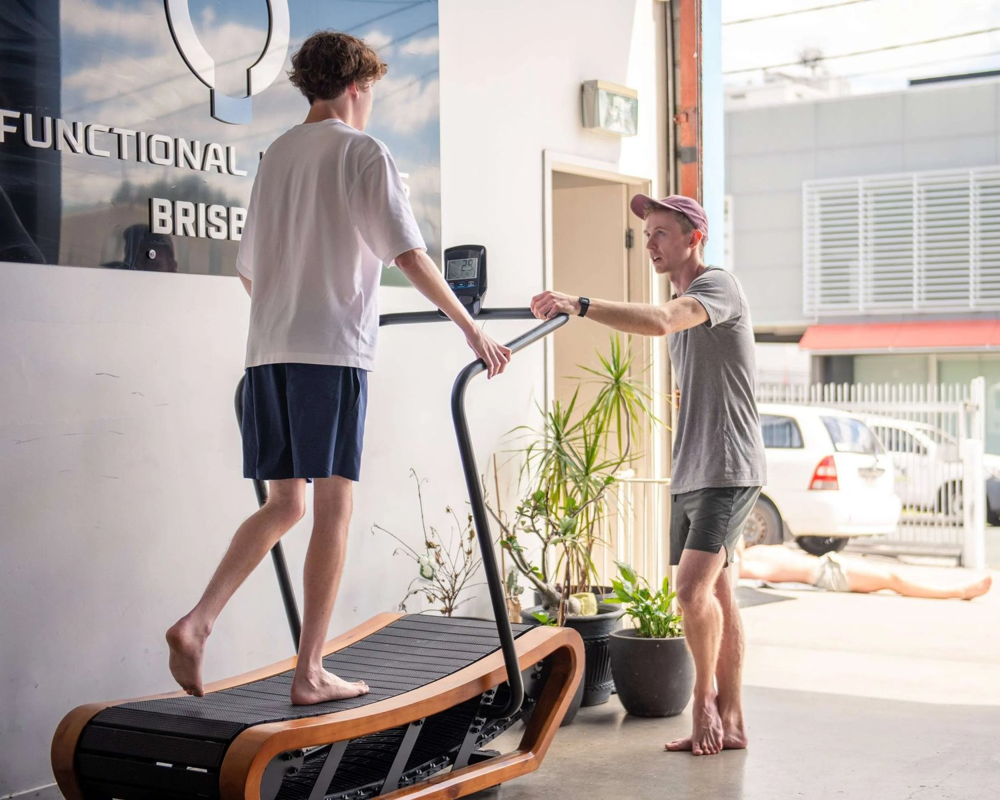

Thoracic Outlet Syndrome (TOS) is a condition that many struggle with. Many often resort to invasive treatments like surgery. Or, people rely on short-term fixes that don’t address the underlying cause.
TOS happens when the nerves or blood vessels between your collarbone and first rib are compressed. This compression can cause pain, tingling, or numbness in the shoulder, arm, and fingers. Symptoms often feel like a pinched nerve in the shoulder or scapula.
Nerves can radiate down the arm to the fingers, creating discomfort. Many patients describe this as “shoulder pain radiating down the arm to fingers.” Others say it feels like “right shoulder pain radiating down arm to fingers.”
Common Treatments for TOS
Most current treatments for TOS focus on short-term relief rather than long-term solutions. Typical advice includes physical therapy, medications, or even surgery. Many of these approaches fail to consider the root causes of the problem.
Physical Therapy: Traditional physical therapy often focuses on treating the pain. However, it doesn’t address the poor posture and dysfunctional movement patterns that led to the compression in the first place.
You might learn exercises to stretch the muscles around your shoulder joint. But if you do not correct your posture and gait, these issues will keep coming back. People experiencing tingling in the shoulder blade or symptoms like a pinched nerve behind the shoulder blade may get short-term relief. Unfortunately, the pain often returns as soon as the superficial stretch wears off.
In fact, this stretching causes a further reduction in stability and therefore more discomfort. TOS is largely a condition of compression and lack of stability. Because of this, stretching will never truly solve the issue.
Surgery: In severe cases, doctors recommend surgery to relieve the pressure. However, surgery doesn’t address the dysfunctional biomechanics that caused the compression in the first place. Many people continue to experience symptoms like tingling in the scapula or shoulder pain after surgery. This is because the underlying cause — poor movement and posture — hasn’t been addressed.
For functional TOS, surgery can often be avoided. And, even if surgery is underwent, you will still need to address the underlying issues. In fact, surgery alone does not solve the issue in most cases,
Pain Medications: Taking painkillers or anti-inflammatory drugs might temporarily reduce the pain. But again, this only masks the symptoms. For someone experiencing shoulder numbness or tingling sensation in the shoulder, popping a pill doesn’t solve why that nerve is getting pinched in the first place.

What Actually Causes TOS?
The real problem with TOS lies in how your body moves and holds itself. Most TOS cases are becuase of poor posture and dysfunctional movement patterns, not just isolated muscle or nerve issues. People with TOS often have a compressed nerve in the shoulder blade because their shoulder joint and spine aren’t functioning properly.
Do you experience “tingling in left shoulder” or “trapped nerve pain in shoulder blade?” This is likely because your poor posture is putting pressure on your nerves.
Poor posture can cause the muscles around your neck and shoulder to overcompensate. Especially when combined with a lack of thoracic (mid-back) mobility. This leads to nerve compression — commonly felt as “scapula numbness and tingling” or a pinched nerve between shoulder blades. Over time, this can even lead to permanent nerve damage.
People often search for how to release a pinched nerve in the shoulder or the trapped nerve pain in the shoulder blade through conventional therapies. They frequently miss the connection to overall body mechanics. By retraining how you walk and stand, you can significantly reduce the pressure that contributes to a compressed nerve in the shoulder blade.

The Functional Patterns Approach to TOS
At Functional Patterns Brisbane, we take a different approach to TOS treatment. Instead of focusing only on the symptoms, we focus on fixing the root cause of the problem. This involves addressing dysfunctional posture and movement. Here’s how:
Analyse Your Gait: Your gait — how you walk/run — plays a significant role in how your muscles function and hold tension. Many people with TOS have dysfunctional gait patterns that lead to tightness and compression in the shoulders. By retraining the way you walk, we can help relieve the pressure on your nerves, preventing issues like “tingling sensation in the shoulder blade.”
Posture Correction: We focus on fixing the poor posture that causes TOS. This involves exercises that realign your spine and shoulder joints, taking the pressure off the nerves.
Many TOS sufferers have a compressed nerve behind the shoulder blade because their shoulder blades stick out. This is a condition called scapular winging. By addressing this, we can relieve many of the symptoms associated with TOS. For example, “shoulder numbness” or “right shoulder pain radiating down arm to fingers.”
Improving Thoracic Mobility: Most people with TOS have poor mobility in their thoracic spine (mid-back). This puts extra pressure on the neck and shoulder, leading to trapped nerves. By increasing thoracic mobility, we can reduce the likelihood of nerve compression. This prevents symptoms like “shoulder pain radiating down arm to fingers.”
Breathing Mechanics: Many TOS sufferers have poor breathing mechanics, which contributes to the compression in the thoracic outlet. Poor breathing patterns can put extra pressure on the neck and shoulders. Leading to symptoms like “tingling feeling shoulder blade” or “shoulder blade pain pinched nerve.” By retraining how you breathe, we can help relieve this pressure and restore function.

Functional Patterns Exercises for TOS
Our approach includes exercises that target the root cause of TOS. Here are a few examples:
-
Posture Realignment: These exercises correct the alignment of your spine and shoulder blades. This reduces the likelihood of a pinched nerve in the shoulder or scapula.
-
Gait Retraining: These exercises teach your body to move efficiently. This prevents the dysfunctional patterns that lead to TOS symptoms like “shoulder numbness” or “trapped nerve in shoulder blade.”
-
Thoracic Mobility Drills: These exercises increase mobility in your mid-back. This reduces the pressure on the nerves in your neck and shoulders. In turn, this helps to alleviate symptoms like “tingling sensation in shoulder” or “tingling in left shoulder blade.”

Why Functional Patterns Works
Most traditional treatments for TOS fail because they focus only on the symptoms. Functional Patterns focuses on the root cause. By improving posture, gait, and movement mechanics, we can relieve the pressure on the nerves and prevent TOS from coming back. This is a long-term solution, not just a temporary fix.
If you're tired of dealing with the symptoms of TOS — whether it’s “tingling in shoulder,” “trapped nerve in scapula,” or “shoulder numbness” — Functional Patterns offers a solution that goes beyond temporary relief. We address the root cause, giving you long-term results.